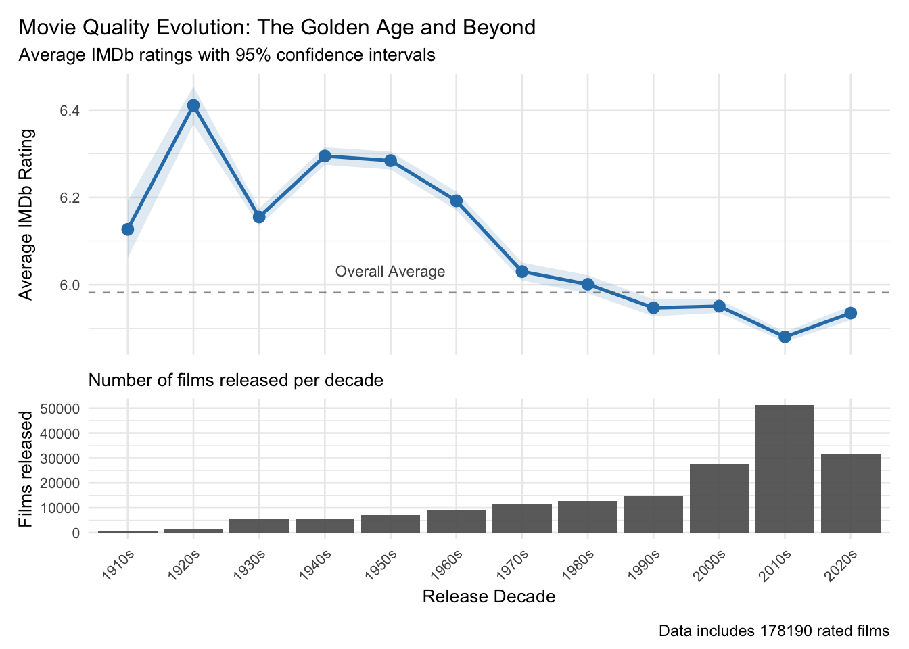
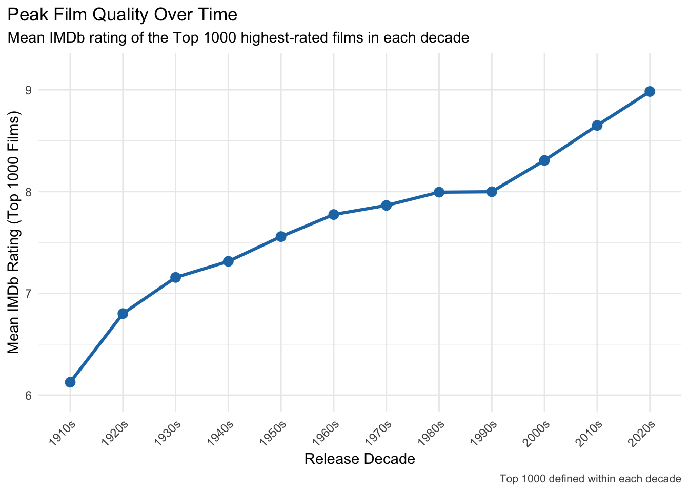
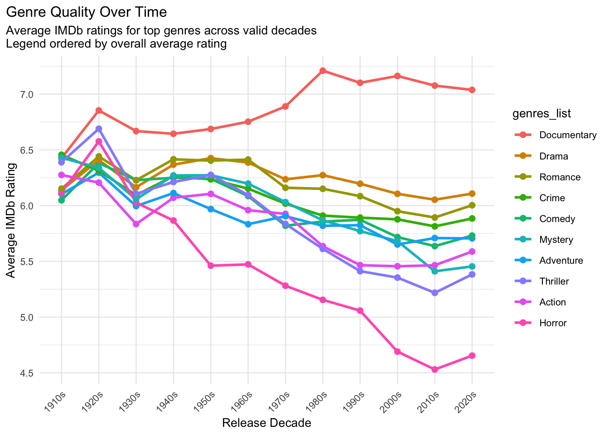
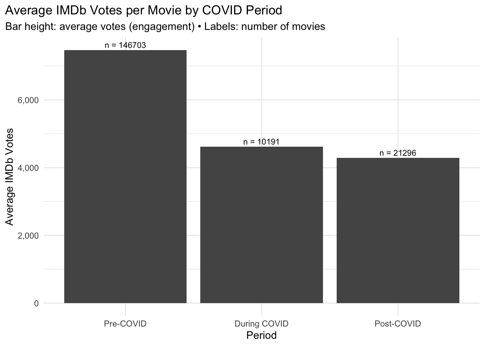
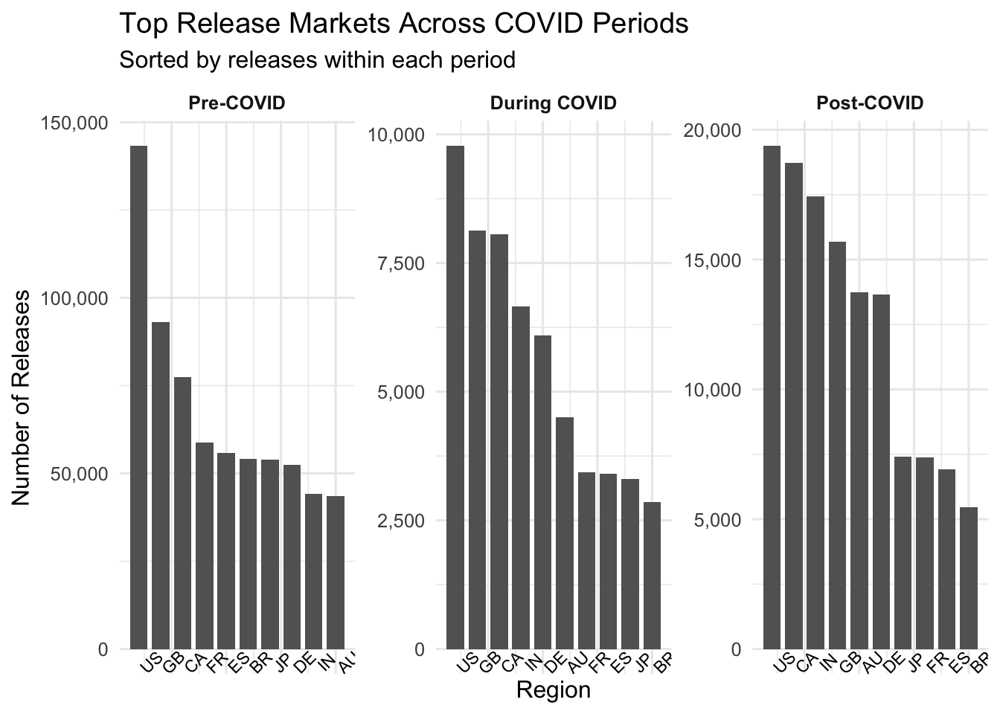
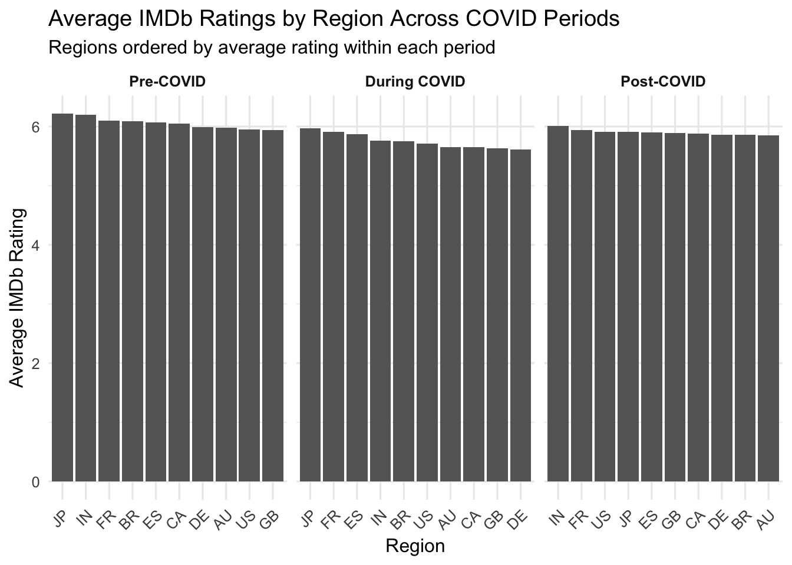
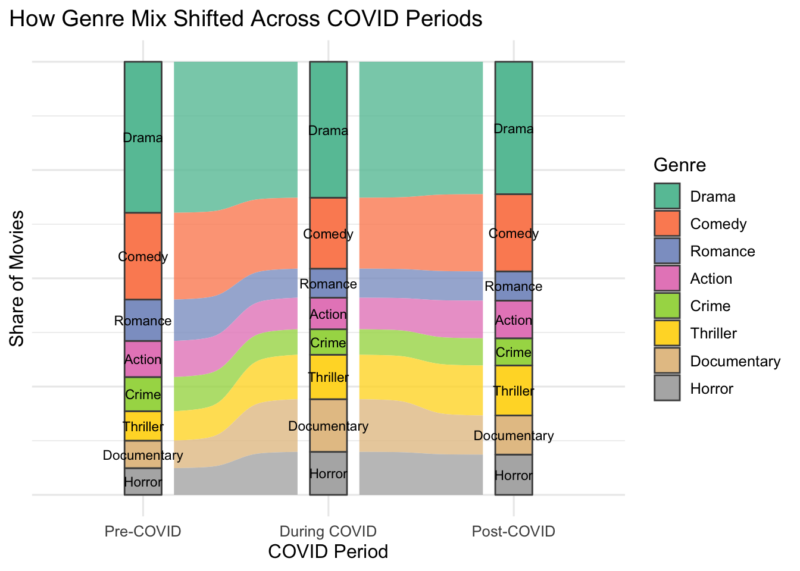

movies <- movies |>left_join(ratings, by =c("tconst"="tconst")) |>rename(imdb_rating = averageRating, imdb_votes = numVotes)
Code
movies <- movies |>mutate(genres_list =if_else(is.na(genres),list(NA_character_),str_split(genres, ",\\s*") ),release_decade =case_when(!is.na(startYear) ~paste0(floor(startYear/10) *10, "s"),TRUE~NA_character_ ) )
Code
# Handle missing Datamovies_clean <- movies |># Remove movies missing release year (very small fraction)filter(!is.na(startYear)) |># Remove movies with no ratings (not useful for analysis)filter(!is.na(imdb_rating), !is.na(imdb_votes)) |># Remove movies with runtime 0 or unrealistic (< 10 min)filter(!is.na(runtimeMinutes), runtimeMinutes >=10) |># Keep only movies with at least 50 votes (reduces noise)filter(imdb_votes >=50)
3.0.1 First, we perform some Exploratory Data Analysis on our IMDB Dataset.
To understand the Quality of movies over the decades, we consider the criteria of Average Ratings by decade. We also observe the number of movies released every decade, as that effects the average rating as well.
Code
decade_ratings <- movies_clean |>group_by(release_decade) |>summarise(mean_rating =mean(imdb_rating),se =sd(imdb_rating) /sqrt(n()),n =n(),median_rating =median(imdb_rating) ) |>filter(n >=100) # Only decades with enough datap_rating <-ggplot(decade_ratings, aes(x = release_decade, group =1)) +geom_ribbon(aes(ymin = mean_rating -1.96* se,ymax = mean_rating +1.96* se),alpha =0.15, fill ="#2c7fb8") +geom_line(aes(y = mean_rating), color ="#2c7fb8", linewidth =0.9) +geom_point(aes(y = mean_rating), color ="#2c7fb8", size =2.7) +geom_hline(yintercept =mean(movies_clean$imdb_rating),linetype ="dashed", color ="gray40", alpha =0.7) +annotate("text", x =5,y =mean(movies_clean$imdb_rating) +0.05,label ="Overall Average",size =3, colour ="gray30") +labs(title ="Movie Quality Evolution: The Golden Age and Beyond",subtitle ="Average IMDb ratings with 95% confidence intervals",x =NULL,y ="Average IMDb Rating" ) +theme_minimal(base_size =10) +theme(axis.text.x =element_blank(),axis.ticks.x =element_blank(),plot.title.position ="plot" )p_volume <-ggplot(decade_ratings, aes(x = release_decade, y = n)) +geom_col(alpha =0.9) +labs(subtitle ="Number of films released per decade",x ="Release Decade",y ="Films released" ) +theme_minimal(base_size =10) +theme(axis.text.x =element_text(angle =45, hjust =1),plot.subtitle =element_text(margin =margin(b =5)) )p_rating / p_volume +plot_layout(heights =c(2, 1)) +plot_annotation(caption =paste("Data includes", nrow(movies_clean), "rated films") )

Interestingly, despite the surge in production during the 2010s, the decade shows a noticeable decline in average ratings, indicating that volume may dilute decade-level quality estimates.
Because average ratings are strongly affected by the explosion of low-profile releases in recent decades, especially the 2010s, we next want to compare the top-performing films in each decade (e.g., top 100 or top 1000) to obtain a clearer picture of cinematic quality over time.
Code
valid_decades <- decade_ratings$release_decadetop_decade_ratings <- movies_clean |>filter(release_decade %in% decade_ratings$release_decade) |>group_by(release_decade) |>slice_max(order_by = imdb_rating, n =1000, with_ties =FALSE) |>summarise(mean_top1000 =mean(imdb_rating),median_top1000 =median(imdb_rating),n_top =n() ) |>arrange(release_decade)ggplot(top_decade_ratings, aes(x = release_decade, y = mean_top1000, group =1)) +geom_line(color ="#1f78b4", linewidth =1.1) +geom_point(size =3, color ="#1f78b4") +labs(title ="Peak Film Quality Over Time",subtitle ="Mean IMDb rating of the Top 1000 highest-rated films in each decade",x ="Release Decade",y ="Mean IMDb Rating (Top 1000 Films)",caption =paste("Top 1000 defined within each decade") ) +ylim(6, 9.2) +theme_minimal(base_size =11) +theme(axis.text.x =element_text(angle =45, hjust =1),plot.title.position ="plot",plot.caption =element_text(size =8, color ="gray30") )

The average rating of the top 1000 films keeps increasing over time, but that’s not really a fair comparison, because newer movies get many more ratings than older ones, IMDb simply wasn’t around back then. To get a clearer picture of movie quality without this bias, we’ll instead look at pre-COVID, during-COVID, and post-COVID films later on and explore how the pandemic affected movie releases.
Next, we look at the top genres. We start by seeing which genres have the most movies, since the genres that get made the most are usually the ones considered most popular?
We can obeserve that Drama Genre movies are made the most followed by Comedy and Romance.
Next what if we try to get the most popular genre by rating, will Drama still be the most popular category, to avoid the decline in ratings by different number of films in each genre let’s compare average ratings.
Code
genre_ratings_by_decade <- movies_clean |>filter(release_decade %in% valid_decades) |>unnest(genres_list) |>filter(genres_list %in% top_genres) |>group_by(release_decade, genres_list) |>summarise(mean_rating =mean(imdb_rating),count =n(),.groups ="drop" )genre_totals <- genres_by_decade_filtered |>group_by(genres_list) |>summarise(total =sum(n)) |>arrange(desc(total))genre_ratings_by_decade <- genre_ratings_by_decade |>mutate(genres_list =factor(genres_list, levels = genre_totals$genres_list))# Compute overall mean rating per genre and use it to order the factorgenre_order <- genre_ratings_by_decade |>group_by(genres_list) |>summarise(overall_mean =mean(mean_rating, na.rm =TRUE), .groups ="drop") |>arrange(desc(overall_mean)) |>pull(genres_list)genre_ratings_by_decade <- genre_ratings_by_decade |>mutate(genres_list =factor(genres_list, levels = genre_order))ggplot(genre_ratings_by_decade,aes(x = release_decade, y = mean_rating,colour = genres_list, group = genres_list)) +geom_line(linewidth =1) +geom_point(size =2) +labs(title ="Genre Quality Over Time",subtitle ="Average IMDb ratings for top genres across valid decades\nLegend ordered by overall average rating",x ="Release Decade",y ="Average IMDb Rating" ) +theme_minimal(base_size =10) +theme(axis.text.x =element_text(angle =45, hjust =1),plot.title.position ="plot" )

Interestingly, Documentaries clearly stand out as the highest-rated genre over the decades, even though Drama dominates in terms of production volume. Most other genres show a gradual decline in ratings over the decades, with Horror dropping the most sharply.
Next, we want to understand the relationship between Runtime and Rating, faceted by genre.
It’s interesting that Action, Romance, and Drama films tend to have the longest runtimes, whereas Documentaries and Horror movies are generally much shorter. We also see that longer documentaries consistently earn higher ratings, while genres like Horror, Mystery, Thriller, and Action show a noticeable dip in ratings for films around the 60-minute mark.
3.0.2 Moving on, let’s unpack what the IMDb data is telling us about the film world before, during, and after COVID.
We measured engagement via average IMDb votes (proxy for viewership interest) and number of releases per period.
Code
# Plot: Average Votes by COVID Period (Engagement Proxy)engagement_summary <- movies_clean |>filter(!is.na(period)) |>group_by(period) |>summarise(avg_votes =mean(imdb_votes, na.rm =TRUE),movie_count =n(),.groups ="drop" ) |># order periods: pre-covid -> during covid -> post-covidmutate(period =factor( period,levels =c("Pre-COVID", "During COVID", "Post-COVID") ) )ggplot(engagement_summary,aes(x = period, y = avg_votes)) +geom_col(fill ="#555555") +geom_text(aes(label =paste0("n = ", movie_count)),vjust =-0.4, size =3) +labs(title ="Average IMDb Votes per Movie by COVID Period",subtitle ="Bar height: average votes (engagement) • Labels: number of movies",x ="Period",y ="Average IMDb Votes" ) +scale_y_continuous(labels = scales::comma) +theme_minimal(base_size =11) +theme(plot.title.position ="plot" )

Movie engagement drops sharply during COVID, likely due to theatre closures and reduced global releases. Even after COVID, average votes remain well below pre-pandemic levels, suggesting a continued shift toward streaming and series consumption or something else.
Code
movies_with_regions <- movies_clean |>filter(!is.na(period)) |>select(tconst, period, imdb_votes, imdb_rating, startYear) |>inner_join( akas |>filter(!is.na(region), region !="\\N") |>select(titleId, region),by =c("tconst"="titleId") )# Get top 10 regions overalltop_regions <- movies_with_regions |>count(region, sort =TRUE) |>slice_head(n =10) |>pull(region)# Get region counts by COVID periodregion_by_period <- movies_with_regions |>filter(region %in% top_regions) |>count(period, region) |>mutate(country_name =countrycode(region, "iso2c", "country.name",custom_match =c("XWW"="Worldwide"))) |># Fix period orderingmutate(period =factor(period, levels =c("Pre-COVID", "During COVID", "Post-COVID")))region_by_period <- region_by_period |>mutate(country_name =countrycode(region, "iso2c", "country.name",custom_match =c("XWW"="Worldwide")))
Code
region_by_period <- region_by_period |>mutate(period =factor(period, levels =c("Pre-COVID", "During COVID", "Post-COVID")) )region_by_period2 <- region_by_period |>mutate(period =factor(period,levels =c("Pre-COVID", "During COVID", "Post-COVID")) ) |>group_by(period) |>arrange(desc(n), .by_group =TRUE) |>mutate(rank =row_number()) |>ungroup()ggplot(region_by_period2,aes(x = rank, y = n)) +geom_col(width =0.8, fill ="#636363") +# label each bar with the ISO2 region codegeom_text(aes(label = region, y =0),vjust =2, angle =45, size =3) +facet_wrap(~ period, scales ="free_y") +scale_y_continuous(labels = scales::comma) +labs(title ="Top Release Markets Across COVID Periods",subtitle ="Sorted by releases within each period",x ="Region",y ="Number of Releases" ) +theme_minimal(base_size =12) +theme(axis.text.x =element_blank(), # hide numeric rank labels (1,2,3…)axis.ticks.x =element_blank(),strip.text =element_text(face ="bold") )

India showed a major rise in influence during COVID, jumping to the third-largest film-releasing region and sustaining that position post-COVID. Overall release volumes, however, dropped sharply during the pandemic and have not returned to pre-COVID levels.Great Britain took a hit post-covid while USA and Canada maintained their top positions.
Code
rating_region_period <- movies_with_regions |>filter(region %in% top_regions) |>group_by(period, region) |>summarise(avg_rating =mean(imdb_rating, na.rm =TRUE),.groups ="drop" ) |>mutate(period =factor(period, levels =c("Pre-COVID", "During COVID", "Post-COVID")),region_reordered =reorder_within(region, -avg_rating, period) )ggplot(rating_region_period,aes(x = region_reordered, y = avg_rating)) +geom_col(fill ="grey40") +facet_wrap(~ period, scales ="free_x") +scale_x_reordered() +labs(title ="Average IMDb Ratings by Region Across COVID Periods",subtitle ="Regions ordered by average rating within each period",x ="Region",y ="Average IMDb Rating" ) +theme_minimal(base_size =12) +theme(axis.text.x =element_text(angle =45, hjust =1),strip.text =element_text(face ="bold") )

Interestingly, India sees a noticeable dip in average ratings during COVID but rebounds strongly afterward, becoming the highest-rated region post-COVID. Japan, on the other hand, maintains high ratings through COVID but experiences a slight decline in the post-COVID period.
Next, we want to understand if the pandemic had an effect on the global reach of movies, We use number of release regions per movie as a proxy for global reach. Share of movies with >5 regions increased post-2020.
Code
# Plot: Average Number of Release Regions by COVID Periodakas_count <- akas |>filter(!is.na(region)) |># Exclude original (\N)group_by(titleId) |>summarise(num_regions =n_distinct(region, na.rm =TRUE))movies_clean <- movies_clean |>left_join(akas_count, by =c("tconst"="titleId")) |>mutate(num_regions =if_else(is.na(num_regions), 0L, num_regions))global_reach_plot <- movies_clean |>mutate(period =factor(period,levels =c("Pre-COVID", "During COVID", "Post-COVID"))) |>group_by(period) |>summarise(avg_regions =mean(num_regions, na.rm =TRUE), .groups ="drop") |>ggplot(aes(x = period, y = avg_regions, group =1)) +geom_line(color ="#2ca02c", linewidth =1.5) +geom_point(color ="#2ca02c", size =3) +labs(title ="Average Number of Release Regions per Movie by COVID Period",x ="Period",y ="Average Regions" ) +theme_minimal(base_size =12) +theme(plot.title.position ="plot")global_reach_plot
It is interesting to note that even though theatres were closed down, the number of regions movies spread to rose significantly, probably due to the increased popularity of global streaming platforms.
At first glance it looks like globalization slowed, but the opposite could be true for blockbuster and mid-tier films. The slight dip in the overall average could be driven by an explosion of hyper-local, micro-budget movies that rarely leave their home country.
Meanwhile, any film with decent marketing muscle now routinely lands in 20–50+ territories thanks to Netflix, Prime, Disney+, etc. In short: the ceiling got much higher even if the floor stayed low.
Finally, we try to understand the change in Genre preferences during and after pandemic, if the pandemic had any effect on it.
Code
top_genres <- movies_clean |>unnest(genres_list) |>filter(!is.na(genres_list)) |>count(genres_list, sort =TRUE) |>slice_head(n =8) |>pull(genres_list)# 2. Genre *shares* by period (normalize within each period)genre_flow_prop <- movies_clean |>filter(!is.na(period)) |>unnest(genres_list) |>filter(genres_list %in% top_genres) |>count(period, genres_list, name ="n") |>group_by(period) |>mutate(share = n /sum(n) ) |>ungroup() |>mutate(period =factor(period,levels =c("Pre-COVID", "During COVID", "Post-COVID")),genres_list =fct_reorder(genres_list, n, .fun = sum, .desc =TRUE) )# 3. Alluvial using shares (each column = 100%)ggplot(genre_flow_prop,aes(x = period,stratum = genres_list,alluvium = genres_list,y = share,fill = genres_list)) +geom_flow(alpha =0.8, knot.pos =0.4) +geom_stratum(width =0.2, colour ="grey30") +geom_text(stat ="stratum",aes(label =after_stat(stratum)),size =3) +scale_fill_brewer(palette ="Set2", name ="Genre") +scale_y_continuous(labels = scales::percent) +labs(title ="How Genre Mix Shifted Across COVID Periods",x ="COVID Period",y ="Share of Movies" ) +theme_minimal(base_size =12) +theme(plot.title.position ="plot",axis.text.y =element_blank(),axis.ticks.y =element_blank() )

It is interesting to note that despite the chaos of COVID, the genre mix stayed remarkably stable: Drama, Comedy, Action, etc. kept almost the same share before, during, and after the pandemic. What did shift, however, was a noticeable rise in Thrillers and Documentaries (also notable that True-Crime Documentaries gained popularity during the Pandemic). In other words, the pandemic changed where movies were released and how audiences engaged with them, but not what kinds of stories the industry continued to produce.